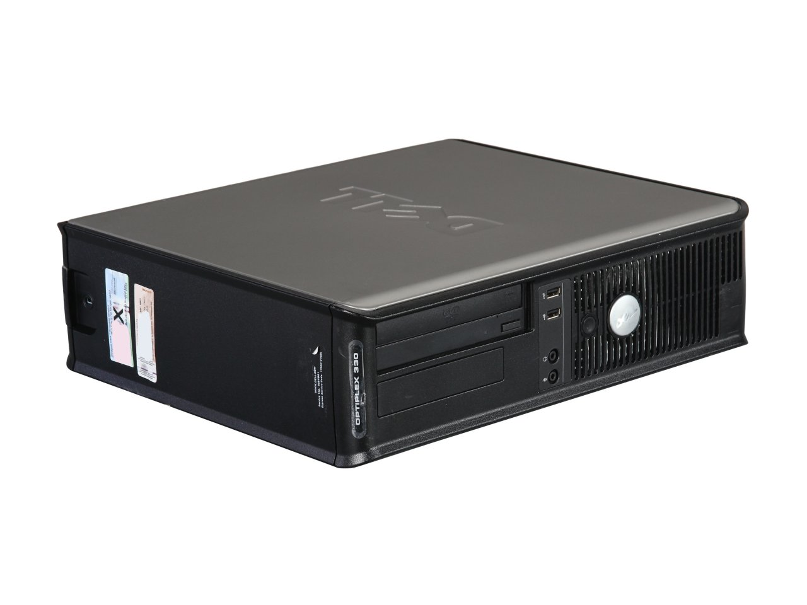
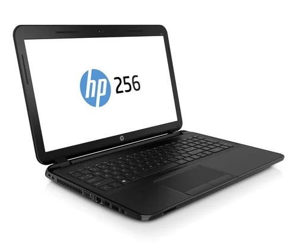
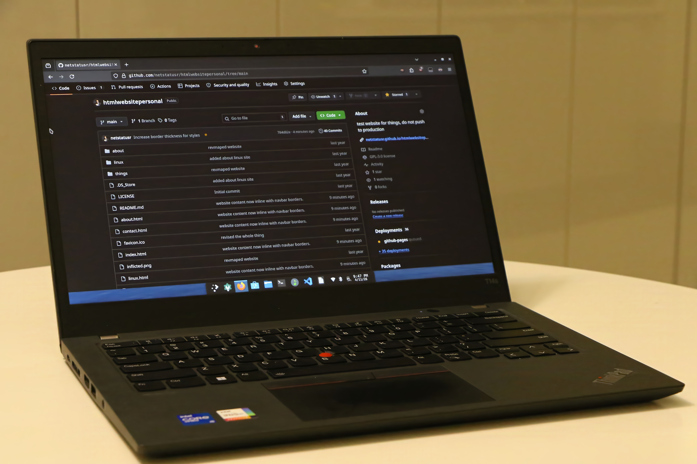

Things I like the most.
Computers and Operating Systems (debian linux ftw)
Computer networking and system administration
Repairing computers (somewhat)
English and some Swedish
trying to build a homelab
Dell OptiPlex 330 SFF, The first computer that I had; standard office desktop.

HP 256 G3. My first laptop, used it till the fan died. Absolute chad of a laptop.

i like ThinkPads if you didn't know

Switched to a ThinkPad T14s Gen 2 with the I5-1145G7 and 16GB of RAM. Better than the Mac in every way except the speaker. The keyboard is so good to type on, the build quality is amazing and the performance is great. I love it.
OS' I like
Technically Linux is a kernel, a part of a fully functional operating system.
Windows has been a mess lately; due to Microsoft making Windows shit with ads and and a lot of bugs. Windows 7 was the last good "version" of Windows.
I have used macOS before it's not the best but it't not the worst. But my personal favourite is OS X 10.9 Mavericks, Snow Leopard is also pretty good. Not the best for my interests (networking, sysadmin) not bad.
This Page is UNDER CONSTRUCTION